Agent-centric-real-to-sim · 归档于 2026-11-05
PolaRiS
PolaRiS: Scalable Real-to-Sim Evaluations for Generalist Robot Policies
arXivPDF Project pageCodeHubScene GUI
归档到 Agent-centric real-to-sim：从真实场景的短视频扫描建出仿真评测环境，平台和我们一样是 DROID。
TL;DR
- Problem
- 通用 VLA 要在很多场景里评，真机太慢；现成的仿真分和真机分对不上，SIMPLER 这类方法又给不了 wrist 相机图像。
- Idea
- 2–5 分钟视频 → 2DGS + mesh 的 Isaac Sim 场景；再用别的场景里 326 条 sim 示范把每个 policy co-finetune 1k 步，补上剩下的视觉差。
- Result
- 5 个 policy × 6 个环境：逐环境 Pearson r 的均值 0.90、MMRV 0.03（Fig. 7）；不 co-finetune 只有 0.30（Fig. 10）。每个 r 只有 5 个点，背后共 600 次真机、1,500 次仿真 rollout（总数是我乘出来的）。
Problem
真机评一圈要几百次 rollout，而便宜的替代分数和真机对不上
Running example · 后面每个 stage 都跟着它走
Food Bussing（UW）：DROID 平台（Franka + 两台 ZED，一台在 wrist）。指令 Put all the foods in the bowl，4 步 rubric（Table 1）。5 个 policy 各跑 20 次真机，进度分是 PaliGemma 0.30 · π0 0.35 · π0 (100k) 0.50 · π0.5 0.70 · π0-FAST 0.875 → 想要：不碰真机就得到一组分数，排序和差距都跟这五个数一致。
flowchart LR IN["例子输入
5 个 policy
Food Bussing"]:::example IN --> A1["Action MSE
离线算动作误差
不跑 rollout"] A1 --> AX["和闭环能力无关
r −0.55 · MMRV 0.40"]:::gap IN --> B1["LIBERO-Score
finetune Libero-90
90 任务 × 50 次"] B1 --> BX["分数饱和
四个挤在 0.86–0.92
真机 0.35–0.875"]:::gap IN --> C1["Ctrl-World
video model 里 rollout
人来打分"] C1 --> CX["接触时幻觉，排错
r 0.53 · MMRV 0.22"]:::gap IN --> D1["SIMPLER 类
green-screen
贴真实背景像素"] D1 --> DX["相机一动就贴不了
没有 wrist 图，跑不了"]:::gap
r 和 MMRV 是 6 个环境的平均（Fig. 7），不是本例单独的数。LIBERO 那行是本例的 10k checkpoint 分数，来自项目页数据文件，第五个 PaliGemma 是 0.56；§5.2 的原话是"nearly all"落在 90–95%。"坏在哪"：LIBERO 饱和、Ctrl-World 幻觉是 §5.2 的结论；SIMPLER 出自 §2、§5.1，论文没有实际跑它；MSE 为什么差是我的推断，论文只说它相关性低。
根本问题：这些分数要么不闭环，要么场景离真机太远，要么喂不了 wrist 相机。 这篇的切入点：直接重建真实场景让 VLA 闭环跑，再用一小段 co-finetune 处理剩下的视觉差。
Related work
| 相关工作 | 解决什么 | 怎么解决 | 和本文的区别 |
|---|---|---|---|
| 同一问题 · 别的解法 | |||
| Real-to-sim 评测（贴背景） SIMPLER、RobotArena ∞ | 在仿真里评真机 policy | green-screen 把真实背景像素贴进仿真 | 只能固定相机 → 本文全 3D 重建，能渲 wrist 视角 |
| 手工仿真 benchmark LIBERO、RoboCasa、RLBench、CALVIN | 可复现地比较算法 | 人工搭场景和任务 | 视觉物理离真机远、搭建费人 → 本文扫描真实场景，不到 1 小时一个 |
| Video model 评测 Ctrl-World、Veo 模拟器、Quevedo et al. | 用生成模型代替仿真 | action-conditioned 视频 rollout | 开放模型接触时幻觉 → 本文用物理引擎算接触，神经渲染只管外观 |
| Splat 仿真评测（窄任务） GSWorld、Zhang et al. [49] | 用 Gaussian splat 环境评 policy | 重建环境，训练和评测同环境 | 只评单任务、见过的环境 → 本文评 generalist，环境没见过 |
| 真机 benchmark RoboArena、AutoEval | 拿到真实分数 | 分布式真机评测，或自动化真机 | 慢、要硬件 → 本文不替代它，用 RoboArena 分数当外部对照 |
| 相似做法 · 别的问题 | |||
| Splat 增强训练 SplatSim、X-Sim、Real2Render2Real、Real-is-Sim、DRAWER | 给 policy 造训练数据或环境 | 重建场景，在里面训练或渲染数据 | 目标是训练 → 本文目标是评测，sim 数据只用来校准 |
| 导航和驾驶的重建评测 EmbodiedSplat、GaussGym、UniSim | 在重建场景里评导航、驾驶 policy | 神经重建当闭环模拟器 | 几乎不碰物体 → 操作要接触，对物理和外观要求更高 |
来源：论文 §2 Related Work 和 §5.1 Comparisons，未另行检索。
Level 1 · Big picture
扫一遍真实场景建成 Isaac Sim 环境，把 policy 调到能在 sim 里跑，再到没见过的场景打分
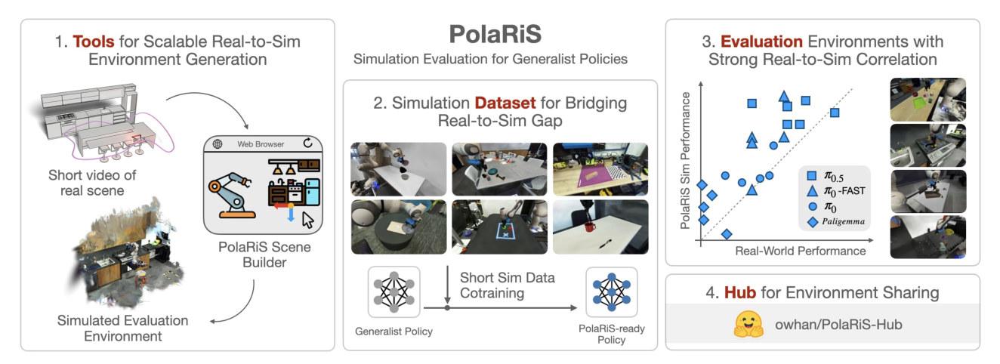
怎么读这张图
- 左 "1. Tools"："Short video of real scene" → "PolaRiS Scene Builder" → "Simulated Evaluation Environment"，就是 Stage 1–4。
- 中 "2. Simulation Dataset"："Short Sim Data Cotraining" 把 "Generalist Policy" 变成 "PolaRiS-ready Policy"，就是 Stage 5。注意被打分的是右边这个调过的版本。
- 右上 "3. Evaluation"：每个符号是一个 policy 在一个环境的分数，这里只是示意，真实数据见 Fig. 6。
- 右下 "4. Hub"：
owhan/PolaRiS-Hub，共享新环境。
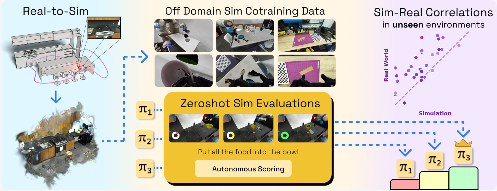
flowchart LR I["Input
2–5 分钟扫描
+ 5 个 policy"]:::example --> M["场景 + 调过的 policy
USD + 1k 步 co-finetune"] M --> O["Output
每个 policy 一个分
0.025 … 0.58"]
Level 2 · Stages
6 个 stage：4 个建场景，1 个调 policy，1 个打分
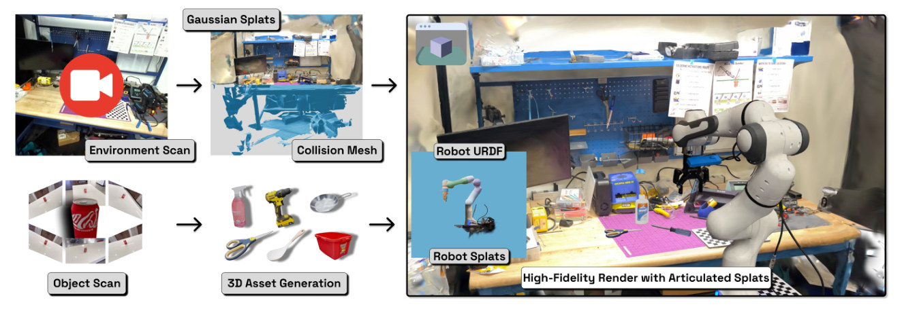
怎么读这张图
- 上排 "Environment Scan" → "Gaussian Splats" + "Collision Mesh"：Stage 1。一段视频出两份东西：看的 splat，碰的蓝色 mesh。
- 左下 "Object Scan" → "3D Asset Generation"：Stage 3。物体单独拍，TRELLIS 生成。
- 中 "Robot URDF" + "Robot Splats"：Stage 2。机器人有运动学，也有真实外观。
- 右 "High-Fidelity Render with Articulated Splats"：Stage 4 合成的结果，桌上的棋盘格就是定尺度的 ChArUco board。
flowchart TD S1["1 · 扫描重建
桌面 splat + mesh"] --> S4 S2["2 · 机器人 splat
Franka，只做一次"] --> S4 S3["3 · 物体生成
黄碗 + 食物"] --> S4 S4["4 · 组装场景
USD + 4 步 rubric"] --> S6 D["另外 15 个场景
326 条 sim 示范"] --> S5 S5["5 · Co-finetune
每个 policy 1k 步"]:::win --> S6 S6["6 · 打分和比较
sim 50 次 · 真机 20 次"] --> O["Output
本例 r 0.81"] click S1 href "#stage-1" click S2 href "#stage-2" click S3 href "#stage-3" click S4 href "#stage-4" click S5 href "#stage-5" click S6 href "#stage-6"
点击 stage 展开 Level 3 细节；Stage 5 改变了结论的含义，见 co-finetuning 对结论的影响。
Level 3 · Details
每个 stage 的细节
Stage 1 Environment Creation via Reconstruction 2–5 分钟单目视频 → 看的 splat + 碰的 mesh，导入 Isaac Sim
- Why：只有整个场景是 3D 的，才能渲任意视角和 wrist 相机（§4.1 末）。
- 拍摄：背景和机器人分两段录，手持慢移防模糊；采集约 5–10 分钟。
- 尺度：场景里放 ChArUco board，定方向和公制尺度。
- 位姿：COLMAP 估每帧相机；用 board 测到的那部分帧做 model aligner，全部对齐到 board 坐标系（App B.1）。
- 外观：训练 2DGS，photometric loss 加 depth、normal 两个正则（App A.1）。
- 几何：光栅化 splat + 体素深度融合 → TSDF → marching cubes → mesh → Isaac Sim。
- 耗时：全自动，RTX 4090 上一般 30 分钟内（§4.1）。
| 符号 | 大白话 | 例子里 |
|---|---|---|
| 一个 splat（中心 μ、朝向 R、盘面大小 S、颜色 c、不透明度 α） | 空间里一片带颜色的小圆盘 | 黄碗边缘的一小片黄色 |
| D | 场景里全部小圆盘，负责"看" | 整张桌面和背景 |
| M | 从 D 提取的 mesh，负责"碰" | 机械手碰到的桌面 |
flowchart LR a["视频 + ChArUco
2–5 分钟"] --> b["COLMAP + 2DGS
位姿、splat D"] b --> c["TSDF → mesh M
进 Isaac Sim"]
Running example 在这一步
扫描 Food Bussing 的黑色台面 → 一份 splat、一份 collision mesh。论文没给这个场景单独的耗时。
Stage 2 Automatic Articulation 机器人视频 + URDF → 随关节运动的 robot splat
- Why：环境是静止的，机器人要动，还要保持照片级外观，否则 policy 看到的手臂是假的。
- 绑定：把一部分 splat 绑到每个 link 上。
- 运动：正运动学给出每个 link 的刚体变换，同时变换它那组 splat 的位置和协方差（§4.1）。
- 渲染：所有 link 的 splat 合在一起，走同一条 2DGS 渲染。
- 复用：一个机器人系统只做一次。
| 符号 | 大白话 | 例子里 |
|---|---|---|
| q | 此刻所有关节的角度 | Franka 7 个关节 |
| Gℓ | 绑在第 ℓ 个 link 上的那组小圆盘 | 前臂外壳的 splat |
| Tℓ(q) | 这个 link 现在的位置和朝向 | q 变了它就跟着动 |
flowchart LR a["robot splat
按 link 分组"] --> b["正运动学
关节角 → link 位姿"] b --> c["变换后渲染
和场景一起出图"]
Running example 在这一步
Franka 的 robot splat 已经做好，Food Bussing 直接复用，wrist 相机跟着 link 走。
Stage 3 Object Creation with Generative Models 物体的多视角照片 → 带纹理的 mesh
- Why：从场景里抠 watertight 资产又慢又要深度硬件（§4.1）。
- How：普通相机多视角 → SAM2 分割 → TRELLIS 得到 structured latent。
- 输出：latent 解码成 splat（外观）和无纹理 mesh（几何），再把外观 bake 到 mesh 上。
- 替换性：PolaRiS 不绑定这个方法；看不到的面由模型补全。
- 没有的证据：论文没有量化生成物体的尺寸或形状误差。
flowchart LR a["多视角照片
黄碗"] --> b["SAM2 + TRELLIS
分割、生成"] b --> c["textured mesh
可碰撞、可渲染"]
Running example 在这一步
黄碗和几样食物玩具各拍一组，生成 mesh。Fig. 5 第二列能看出 sim 里的物体比真机略"假"。
Stage 4 Composing simulated evaluation scenes 环境 + 机器人 + 物体 → USD 评测场景 + 任务判据
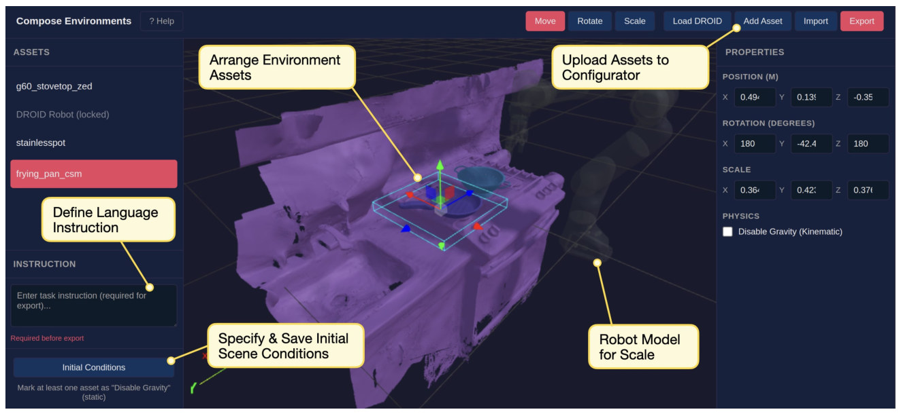
怎么读这张图
- "Upload Assets to Configurator"：上传环境和物体。
- "Arrange Environment Assets"：手动摆物体的位置、朝向、缩放（右栏 Properties）。
- "Robot Model for Scale"：Load DROID 载入半透明机器人当尺度参照。
- "Define Language Instruction" / "Specify & Save Initial Scene Conditions"：人写任务指令，存初始状态。
- 物理：Isaac Sim 默认接触参数，机械臂用厂家默认值，物体质量由用户估计（§4.1）。
- 判据：用户自己定义成功条件，比如某物体在某容器内。
- 时间：GUI 一般不到 5 分钟（Fig. 3）；人工共不到 20 分钟，总墙钟不到 1 小时（§4.1）。
Running example 在这一步
把黄碗和食物摆上台面，写入 Put all the foods in the bowl，存初始状态，导出 USD。
Stage 5 Simulation data co-training 原 policy + 别处的 326 条 sim 示范 + DROID 数据 → PolaRiS-ready policy
- Why：§4.2 承认重建好的环境 out-of-the-box 相关性不稳，怀疑是光照、物体间阴影这类细微差异；不调时 r 只有 0.30（Fig. 10）。
- 数据：Quest 2 VR 遥操作，沿用 DROID 的采集代码，转成 DROID 的 RLDS 格式（App C.2）。
- 规模：15 个场景、18 条指令、326 条轨迹、56,041 timesteps（Table 4；§5.1 写"around 350"）。
- 隔离：这 15 个场景和 6 个测试场景不共用场景和物体（§5.1）。
- 配比：每个 batch 90% 真 DROID + 10% sim（App C.2）。
- 步数：1k 步，batch 128，peak LR 5×10⁻⁵，warmup 1,000（§5.1、Table 2）。
- 有多轻（我算的）：1k × 128 × 10% = 12,800 个 sim 样本，约为 56,041 的 23%；1k 步等于 warmup 长度，按 Table 2 字面看学习率刚爬到峰值就停了。
- 动作空间：全部用 joint position，理由见 E7。
- 耗时：几百步一般不到 25 分钟（§4.2），GPU 未写。
| 符号 | 大白话 | 例子里 |
|---|---|---|
| θ → θ′ | policy 的权重，更新前和更新后 | π0.5 原版 → 调过的副本 |
| Dpre | policy 原本的训练数据 | 真 DROID 数据，占 90% |
| DS | 新收的仿真示范 | 326 条，占 10% |
| λ | batch 里仿真数据的比例 | 0.1 |
| LBC | behavior cloning loss：模仿示范动作的误差 | 各 policy 自己的训练 loss |
| η | 学习率 | peak 5×10⁻⁵ |
更新式（§4.2）就一句话：从"90% 真 + 10% 仿真"的混合数据里抽 batch，按 BC loss 走一步，θ′ ← θ − η∇LBC。
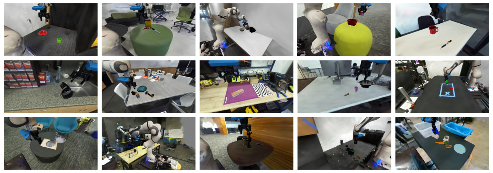
flowchart LR a["sim 示范
15 场景 326 条"] --> b["混入 DROID
10% : 90%"] b --> c["1k 步 BC
5 个 policy 各一次"]:::win
Running example 在这一步
这 326 条里没有 Food Bussing 的场景和物体。π0.5 调 1k 步后，第一次进这个场景就是评测本身。
Stage 6 Zero-shot evaluation and scoring 调过的 policy + 没见过的场景 → sim 分，再和真机分算 r、MMRV
- 仿真：每个 policy 每个任务 50 次 rollout，用特权状态按 rubric 自动打分（§5.1、App C.1）。
- 真机：每个 policy 每个环境 20 次，人按同一 rubric 打分；论文没说是否盲评。
- 分数：分步进度，不是二值成功；每个任务归一到 0–1（App C.1）。
- 初始状态：App C.2 说 checkpoint 分析的 50 次用"same initial conditions"；真机 20 次怎么摆放、是否和 sim 对齐，没写。
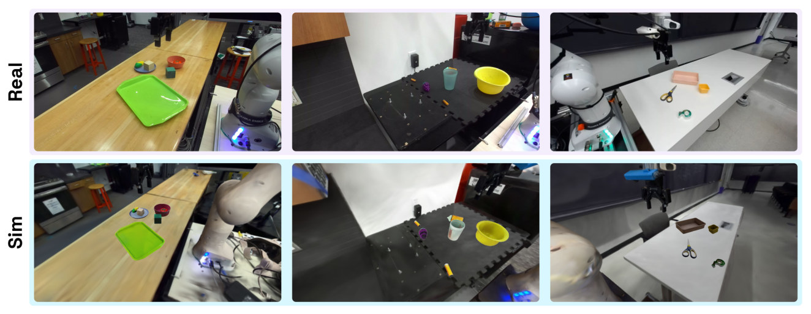
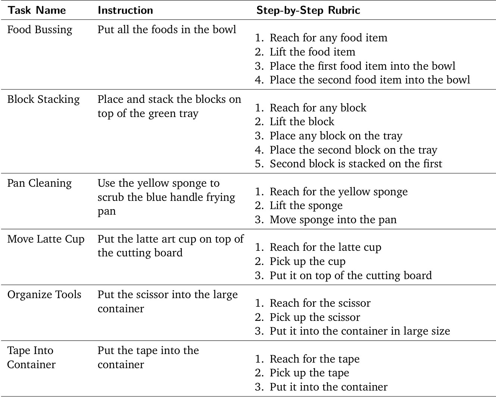
| 符号 | 大白话 | 例子里 |
|---|---|---|
| N | 参与比较的 policy 数 | 5 |
| Ri | policy i 的真机分 | π0.5：0.70 |
| RS,i | policy i 的 sim 分 | π0.5：0.58 |
| Pearson r | 两列分数线性相关的程度，1 最好 | 0.81 |
| MMRV | 对每个 policy，找 sim 排错的对手里真机差距最大的那个，再对 N 取平均；0 最好 | 0.07 |
flowchart LR a["sim 50 次
特权状态打分"] --> c["r · MMRV
5 对分数"] b["真机 20 次
人按 rubric 打分"] --> c
Running example 在这一步
| Policy | 真机 | PolaRiS | LIBERO 10k |
|---|---|---|---|
| PaliGemma-binning | 0.30 | 0.025 | 0.556 |
| π0 | 0.35 | 0.365 | 0.860 |
| π0 (100k) | 0.50 | 0.39 | 0.877 |
| π0.5 | 0.70 | 0.58 | 0.919 |
| π0-FAST | 0.875 | 0.53 | 0.894 |
数字来自项目页 main_correlation_data.json，论文只有散点。只有一对排错：π0.5 和 π0-FAST，真机差 0.175。所以 MMRV = (0.175 + 0.175) / 5 = 0.07，r = 0.81，和 Fig. 13 的 Food Bussing 一致，也是 6 个环境里最差的 r。
贯穿全程 Co-finetuning 对结论的影响 结论不是"这个 policy 在 sim 里的分预测它的真机分"，而是"调过的副本的 sim 分预测原版的真机分"
flowchart TD P["原 checkpoint
pi05_droid_jointpos"]:::example P --> R["真机 20 次
0.70"] P --> C["Co-finetune 1k 步
90% DROID + 10% sim"]:::win C --> Q["调过的副本
pi05_constrain-1k"] Q --> S["仿真 50 次
0.58"] R --> K["Pearson r
两边不是同一组权重"]:::gap S --> K
"真机跑原版"是我的推断，论文没有明说。依据：§5.1 写的是 finetune 之后"run 50 rollouts per task in simulation"；Fig. 11 拿约 14 个步数 × 5 个 seed × 5 个 policy 的 checkpoint 对比，不可能都上真机；项目页脚本的默认列表里 sim 叫 pi05_constrain-1k，real 叫 pi05_joint_pos。
- 这一步决定成败：不调 r 0.30、MMRV 0.29，调过 r 0.86、MMRV 0.07（Fig. 10）。
- "zero-shot"的意思：目标场景不用再收数据、不用再调，不是 policy 没动过。
- "out of the box"有两种用法：§1 说 evaluations "out of the box" r = 0.9，这是调过之后；§4.2 说环境 "out-of-the-box" 相关性不可靠，这是调之前。
- 作者的解释：sim 数据只对齐视觉，不教任务。证据是 OOD 数据和目标场景数据效果相当（E5）。
- 没有直接证据的部分：论文没报每个 policy 调前调后的分数，也没测副本的真机分，所以"副本保留了原版的相对能力"只能由相关性本身间接支持。
- 门槛（我的推断）：要有权重、训练代码和 DROID 数据才能调，黑盒 policy 评不了。"policy-agnostic" 只在 openpi 的 5 个 checkpoint 上试过。
- 步数是敏感旋钮：r 在 1k 附近最高，到 8k–10k 掉到约 0.63（E6）。论文没提用独立的真机数据选 1k。
Recap：例子覆盖了论文的哪些 idea
| 论文里的 idea | 例子里在哪体现 |
|---|---|
| 短视频 → 2DGS + mesh | Stage 1：扫描 Food Bussing 台面 |
| ChArUco 定尺度 | Stage 1：board 放进场景，COLMAP 对齐到它 |
| Articulated robot splat | Stage 2：复用 Franka，wrist 相机跟着动 |
| TRELLIS 生成物体 | Stage 3：黄碗和食物 |
| Scene GUI + 手写判据 | Stage 4：写指令、存初始状态、导出 USD |
| Co-training 补视觉差 | Stage 5：326 条别处的示范，90/10，1k 步 |
| Unseen 环境评测 | Stage 5–6：这些示范里没有本例的场景 |
| 分步进度分 | Stage 6：4 步 rubric |
| Pearson r 和 MMRV | Stage 6：本例 r 0.81、MMRV 0.07，只错一对 |
| 视觉差大于物理差 | E7：论文没说那 3 个任务是哪些 |
| Hub 共享环境 | Fig. 1 右下：场景发布后别人调过的 policy 可直接评 |
Results
平均排序很准，但 r = 0.90 是"5 个点的相关再取平均"，而且全靠 co-finetune
比的是评测分数和真机分数的相关性，不是 policy 的成功率。顺序同论文：E1 和现有评测比 → E2 逐环境 → E3 对外部 benchmark → E4 外观要多真 → E5 要什么 sim 数据 → E6 调多少步 → E7 视觉差还是物理差。
E1PolaRiS 的分数比现有评测更贴近真机吗？§5.2 · Fig. 6, 7
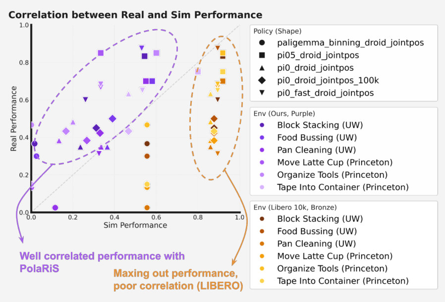
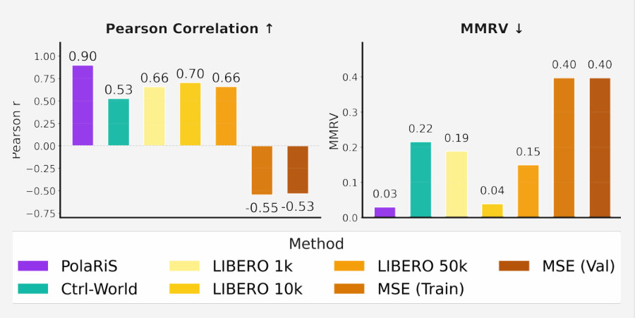
| 数字 | 它到底是什么 | 来源 |
|---|---|---|
| r 0.90 · MMRV 0.03 | 6 个环境各算一次 r 再平均，每个 r 只有 5 个点 | Fig. 7；Fig. 13 的六个值平均也是 0.90 和 0.03 |
| r 0.86 ± 0.03 · MMRV 0.07 ± 0.02 | 同样的 OOD 设置，带误差棒的版本 | Fig. 10；± 取自项目页 data_mix_metrics.json |
| r 0.75 | 30 个（policy, 环境）格子合起来算一次 | 项目页 main_correlation_data.json，论文未报 |
| r 0.96 · MMRV 0.00 | 每个 policy 先对 6 个环境取平均，5 个点算一次 | 我用项目页数据算的，论文未报 |
| r 0.98 · MMRV 0.00 | 对 RoboArena，4 个点 | Fig. 8 |
这张表是我按论文和项目页的数字整理的。论文没有解释 0.90 和 0.86 的差别，也没说 0.90 是单个 seed 还是别的。
- 说明什么
- 相关性更高。PolaRiS r 0.90 / MMRV 0.03，LIBERO 10k 0.70 / 0.04，Ctrl-World 0.53 / 0.22，MSE −0.55 / 0.40（Train）和 −0.53 / 0.40（Val）。
- 在故事里
- 回答问题 (1) 和 (3)：能在 unseen 环境里评，而且强过现有工具。
- 指标
- Pearson r 和 MMRV（§3），分数是 0–1 的进度分。
- 怎么评测
- 6 对真机 / 仿真环境：UW 3 个，Princeton 3 个，都是刚体物体。
- 5 个 policy：§5.1 列 π0、π0-FAST、PaliGemma-binning、π0.5；Fig. 6 和 Table 3 还多一个 π0 (100k)，论文没解释 100k 的含义。
- 每个 policy 每个环境 20 次真机、50 次仿真。总数 5 × 6 × 20 = 600 次真机，5 × 6 × 50 = 1,500 次仿真（论文没印总数）。
- LIBERO：Libero-90 finetune 50k 步，90 任务 × 50 次 = 4,500 次 / policy，取 1k、10k、50k 三个 checkpoint；Fig. 6 只画最好的 10k，约 10 倍算力，这些都偏向 LIBERO。
- Ctrl-World：rollout 由人打分，次数未写。MSE：train / val 动作误差。SIMPLER：没跑，因为不支持 wrist 相机。
- 我的核算
- 和最好的 LIBERO 差距没那么大：MMRV 0.03 对 0.04。LIBERO 10k 的五个平均分顺序也和真机完全一致。
- 领先主要靠一个 policy：去掉 PaliGemma 后逐环境平均 r 是 0.86 对 0.83，全部格子合算反而 0.65 对 0.79。
- 但 LIBERO 不稳：换 1k、50k checkpoint，MMRV 就是 0.19、0.15；它也给不出分环境的分数。
- 绝对分偏低：30 格里 25 格 sim 低于真机，平均 0.32 对 0.50。只能看排序，不能当成功率读。
E2结论在单个环境里也成立吗？§5.2 · Fig. 13
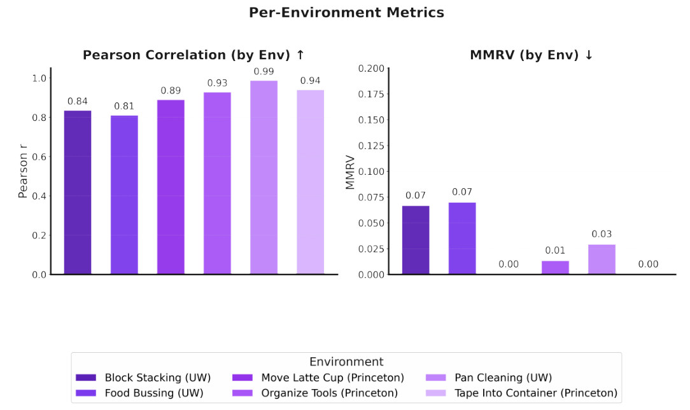
- 说明什么
- 每个环境的排序都不错。r 从 0.81（Food Bussing）到 0.99（Pan Cleaning），MMRV 最大 0.07。
- 在故事里
- 支撑"能评具体部署场景"这个卖点，手工 benchmark 做不到。
- 指标
- 每个环境 5 个 policy，一次 r、一次 MMRV，没有误差棒。
- 怎么评测
- 同 E1。
- 我的核算
- 5 个点的 r 区间很宽：r 0.81 的 Fisher 95% 区间约 [−0.25, 0.99]，只是粗算。
- 场景特异的信号不多：用其他 5 个环境的 sim 平均分预测第 6 个环境的真机排序，r 均值 0.85；用本环境 sim 分是 0.90。
- 分不出环境难度：6 个环境的 sim 均分和真机均分，r 约 0.00。信号主要是"哪个 policy 更强"，不是"这个场景更难"。
E3和独立的真机 benchmark 对得上吗？§5.2 · Fig. 8
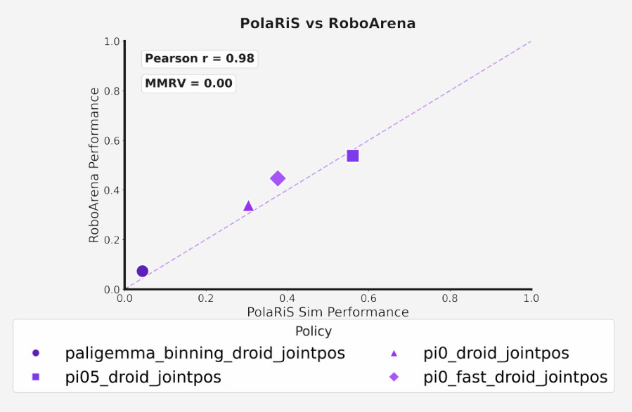
- 说明什么
- 排序完全一致。r 0.98，MMRV 0.00，4 个 policy。
- 在故事里
- 外部证据：真机分不是作者自己的 6 个场景专属。
- 指标
- RoboArena 报告的 average progress score。
- 怎么评测
- 论文自己强调：仿真只覆盖 RoboArena 能力的一小部分，不含非刚体和复杂接触。
- 4 个点的 r 0.98，Fisher 95% 区间约 [0.33, 1.00]（我算的，粗略）；PaliGemma 一个点拉开了约一半跨度。
E4外观要多真？§5.3 · Fig. 9, Table 5
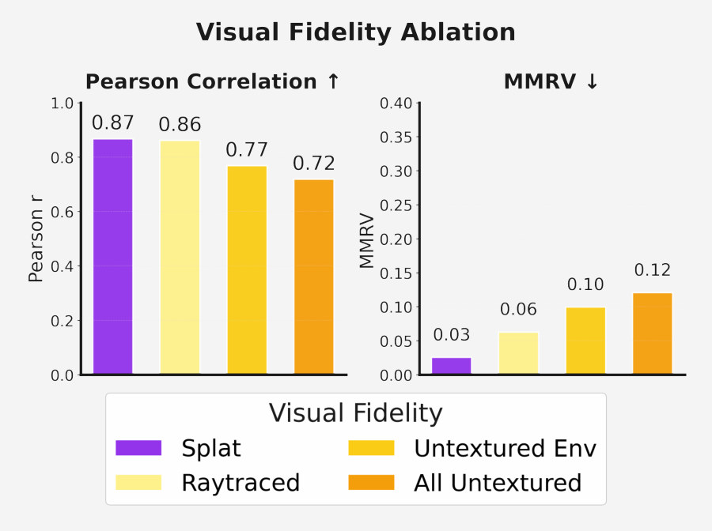
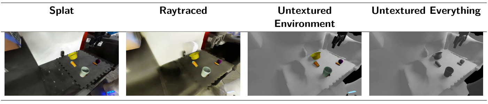
- 说明什么
- Splat 最好，但外观不是唯一因素。Splat 0.87 / 0.03，Raytraced 0.86 / 0.06，Untextured Env 0.77 / 0.10，All Untextured 0.72 / 0.12。
- 在故事里
- 说明 co-training 能吸收一部分视觉差，高保真渲染仍有收益。
- 指标
- 同上。Fig. 9 没有误差棒，Splat 和 Raytraced 的 r 只差 0.01，MMRV 差 0.03。
- 怎么评测
- 都用 OOD 数据，只换渲染（App C.3）。Raytraced 把 2DGS mesh 的顶点色 bake 成纹理（App B.2）。
- 这里 Splat 是 0.87，和 Fig. 7 的 0.90 不同，论文没解释；环境数也没写。
E5Sim 数据必须来自目标场景吗？§5.3 · Fig. 10, Table 4
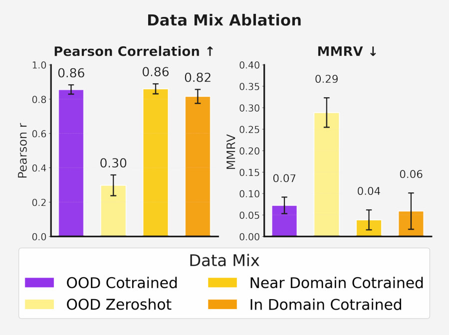
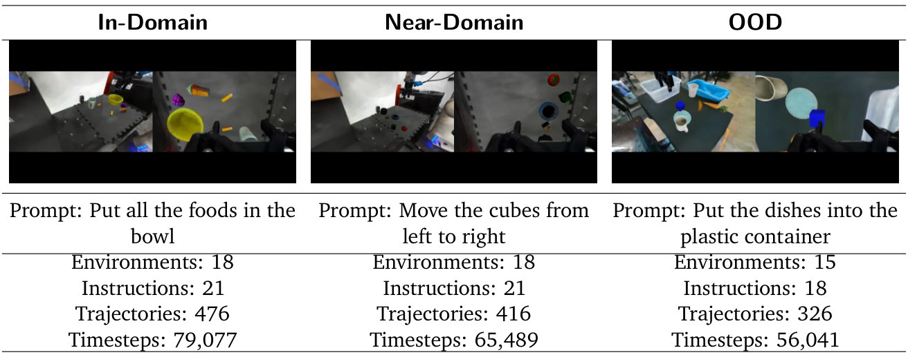
- 说明什么
- 不调不行，但不需要目标场景的数据。OOD 0.86 / 0.07，no-cotrain 0.30 / 0.29，Near-domain 0.86 / 0.04，In-domain 0.82 / 0.06。
- 在故事里
- 这是"新环境不用收数据、不用再调"的依据，也是这篇扩展性的来源。
- 指标
- 同上，图上有误差棒；数值和 Fig. 11 在 1k 步、0 步的点吻合，所以应是 5 个 seed 的结果（我的推断）。
- 怎么评测
- OOD：15 个外部场景。Near-domain：再加 3 个目标环境里非目标任务的数据。In-domain：再加目标任务的数据。
- 论文只提 3 个目标环境，没写是哪 3 个，也没写这张图是否只在这 3 个上算。
- 论文说 near-domain 比 in-domain 略好，可能是后者过拟合快；这只是"possibly"。
E6要调多少步？§5.3 · Fig. 11
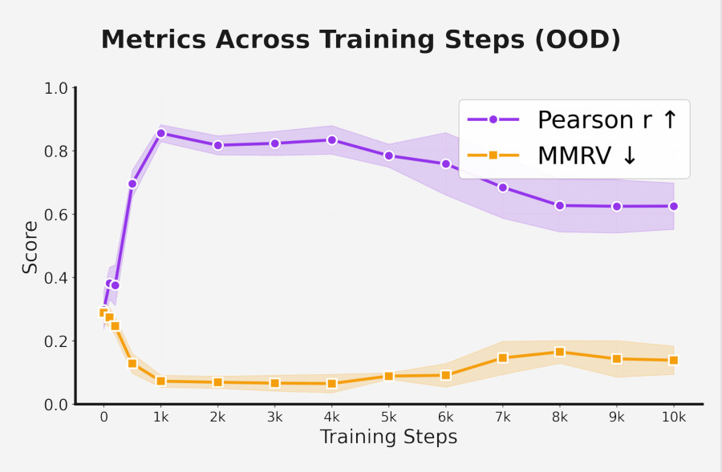
- 说明什么
- 有一个窗口，调过头会变差。读图约值：0 步 r 0.29，500 步 0.70，1k 步 0.85，4k 步 0.83，8k–10k 步 0.63；MMRV 1k 步约 0.07，8k 步约 0.16。
- 在故事里
- 支撑"很小的代价"：1k 步够了，不用每个环境再调。
- 指标
- 每个 checkpoint 50 次 rollout，同样的初始状态（App C.2），对 5 个 seed 取均值和方差。
- 怎么评测
- 所有 policy 各跑 5 次，每次 10k 步。
- 注意（我的推断）：1k 这个默认值和报告的 r 看的是同一份真机分，论文没提 hold-out。曲线在 1k–4k 比较平，这个风险不算大，但主表 0.90 确实高于这里的 0.85。
E7差距来自视觉还是物理？App D.1, C.2 · Fig. 12
| 观测 | 动力学 | 结果 |
|---|---|---|
| 真实图像 | 仿真 | 没有掉分 |
| 仿真渲染 | 真实 | 掉约 25% |
这个小表是我按 App D.1 的文字整理的，论文没有表格。
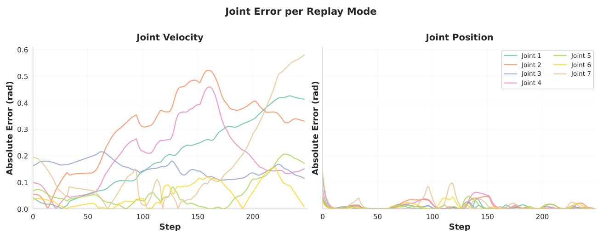
- 说明什么
- 视觉差是主因，这也是 co-training 针对视觉的理由。sim 动力学配真图不掉分，sim 图配真动力学掉约 25%（3 个任务）。joint position 比 velocity 更容易在仿真里跟住。
- 在故事里
- §4.2 用它解释为什么补救手段是 co-training，而不是调物理。
- 指标
- 任务表现；论文没说 25% 是绝对还是相对，也没给 rollout 次数。
- 怎么评测
- 真机和仿真逐步交换：15 Hz，每步一边执行、另一边跟随关节位置。
- 只用了 π0-FAST DROID joint position 一个 policy，3 个任务没有具名。证据比正文的语气窄。
Limits
局限和开放问题
论文自己说的
- 只评刚体任务；非刚体、软体和复杂接触还做不了，"does not entirely replace real-world evaluation"（§5.2）。
- Splat 渲染还有视觉差，未来可试 diffusion 渲染（§6）。
- System identification 比较简单：默认接触参数、用户估质量（§4.1、§6）。
- 未来想把 world model 和物理仿真混合，覆盖更复杂的物体（§6）。
我的推断
- 样本小：5 个 policy、1 个平台、都来自 openpi，r 的不确定性论文没有报告。
- 评的是调过的副本，不是黑盒 policy，见 co-finetuning 对结论的影响。
- "不到 1 小时"只算建一个场景；326 条 VR 遥操作的人力和 rollout 算力论文没报。
- Rollout 数有疑点：3 个 Princeton 任务的 15 个 sim 分全是 1/30 的倍数，而 50 次 × 3 步的平均可以落在任何 1/150 的倍数上，这不像巧合；Pan Cleaning 的 π0 (100k) 真机分是 11/26，20 次凑不出来。这些格子实际次数可能少于 20 和 50，或者分数另有算法。依据只是项目页数据的分母。
For Agent-centric real-to-sim
对我们有什么用
- Sim-to-real 证据的模板：r2s-lite 现在只回放，没有这类证据。这篇的做法可以直接抄：同一批 DROID policy 配对跑真机和仿真、分步 rubric、逐环境报 r 和 MMRV。但要让 policy 在我们的场景里闭环跑，还要有真机分；Isaac 渲染的 GPT mesh 大概率也要过一次 co-finetune：不调 r 只有 0.30，调过之后连无纹理场景也有 0.72（Fig. 9）。
- Mass 和 friction：PolaRiS 同样用默认值和估计值，E7 里 sim 动力学不掉分。但那是闭环 VLA、1 个 policy、3 个任务；回放不看图，视觉差影响不到动作，失败只能来自几何和物理，所以这不能说明假定值够用。Fig. 12 只印证了一点：我们的 worker 用 joint position target 回放是对的。
- 相机和物体角色，这篇没有解法：它到现场重新扫描、放 ChArUco，完全不读 DROID 录下的相机位姿，所以 20 cm 的误差它碰不到。任务指令和成功判据由人在 GUI 里写，所以"take the lid off"被当成"put into receiver"这种错也不会出现。我们只有录好的 episode，这两件事还得自己解决。